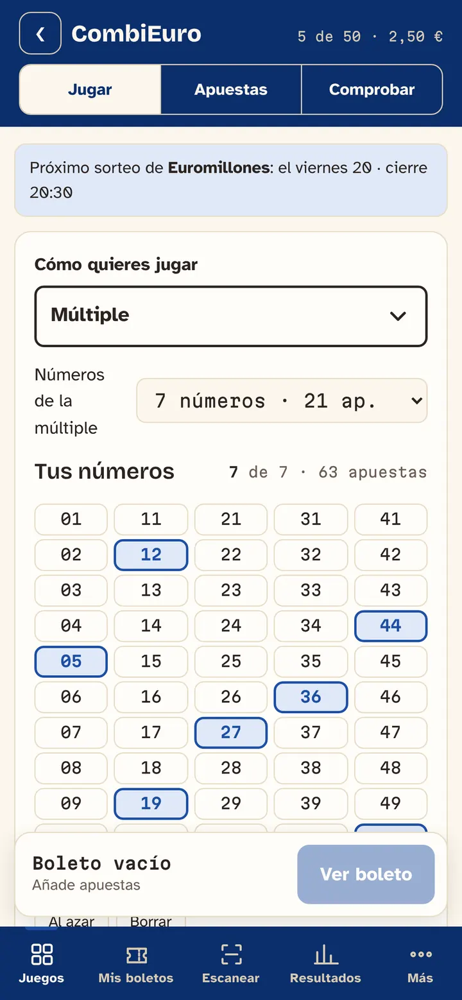
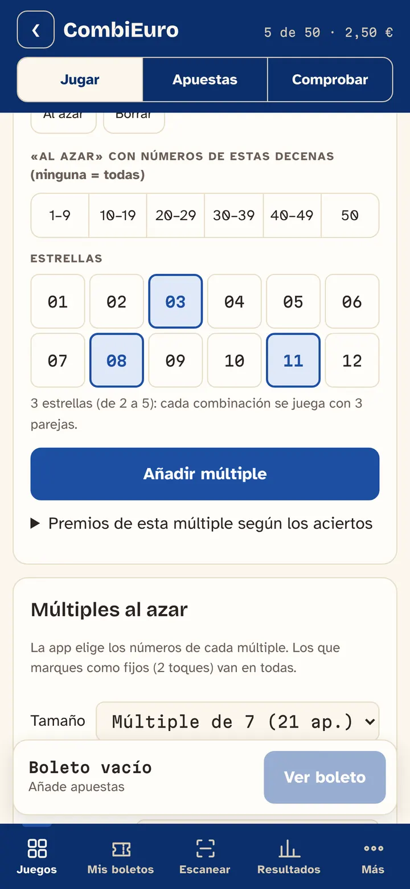

Euromillones
App independiente. Combinario no es oficial ni tiene relación con Loterías y Apuestas del Estado (SELAE). No vende apuestas: solo te ayuda a prepararlas, y se validan y se pagan en un punto de venta. Solo para mayores de 18 años.
En la app se llama CombiEuro. Marcas 5 números del 1 al 50 y 2 estrellas del 1 al 12. Las formas de jugar, la garantía, los fijos y los filtros funcionan como en La Primitiva.
Las estrellas
Las estrellas se marcan debajo de los números. En la múltiple puedes marcar hasta 5 estrellas: cada combinación de números se juega con todas las parejas de estrellas.


En las reducidas eliges qué hacer con las estrellas:
- Todas: todas las parejas en cada apuesta.
- Reducidas: menos parejas.
- Repartidas: una pareja por apuesta.
Cada apuesta cuesta 2,50 €. Un QR lleva hasta 5 apuestas.
Tabla: algunas reducidas de Euromillones
Con 2 estrellas, que van en todas las apuestas. La garantía es de aciertos de números si los 5 que salen están entre los tuyos.
| Tus números | Garantía | Apuestas | Coste | Salen los 5 entre los tuyos |
|---|---|---|---|---|
| 12 | 3 aciertos | 6 | 15,00 € | 1 de cada 2675 |
| 14 | 3 aciertos | 10 | 25,00 € | 1 de cada 1058 |
| 16 | 3 aciertos | 14 | 35,00 € | 1 de cada 485 |
| 20 | 3 aciertos | 32 | 80,00 € | 1 de cada 137 |
| 9 | 4 aciertos | 9 | 22,50 € | 1 de cada 16.816 |
| 10 | 4 aciertos | 14 | 35,00 € | 1 de cada 8408 |
| 11 | 4 aciertos | 22 | 55,00 € | 1 de cada 4586 |
Reducida normal, tal como la da la app. Cada fila está comprobada con todas las formas posibles de salir los 5 números (las estrellas van aparte): en todas se cumple la garantía. La última columna dice en cuántos sorteos, de media, se da la condición para que la garantía cuente; si no se da, puede haber premio, pero no está asegurado. Solo combinaciones de 15 € o más; la app tiene muchas más.